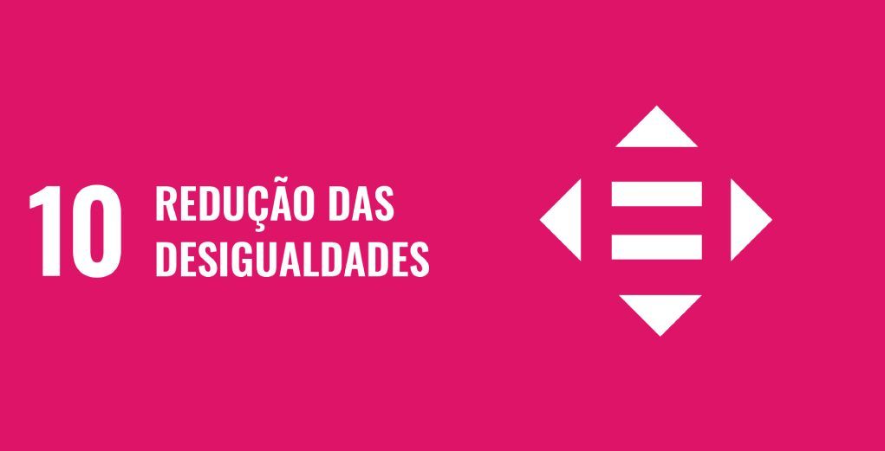

Objetivo 10. Reduzir a desigualdade dentro dos países e entre eles:
- 10.1 Até 2030, progressivamente alcançar e sustentar o crescimento da renda dos 40% da população mais pobre a uma taxa maior que a média nacional.
-
- 10.2 Até 2030, empoderar e promover a inclusão social, econômica e política de todos, independentemente da idade, gênero, deficiência, raça, etnia, origem, religião, condição econômica ou outra.
-
- 10.3 Garantir a igualdade de oportunidades e reduzir as desigualdades de resultados, inclusive por meio da eliminação de leis, políticas e práticas discriminatórias e da promoção de legislação, políticas e ações adequadas a este respeito.
-
- 10.4 Adotar políticas, especialmente fiscal, salarial e de proteção social, e alcançar progressivamente uma maior igualdade.
-
- 10.5 Melhorar a regulamentação e monitoramento dos mercados e instituições financeiras globais e fortalecer a implementação de tais regulamentações.
-
- 10.6 Assegurar uma representação e voz mais forte dos países em desenvolvimento em tomadas de decisão nas instituições econômicas e financeiras internacionais globais, a fim de produzir instituições mais eficazes, críveis, responsáveis e legítimas.
-
- 10.7 Facilitar a migração e a mobilidade ordenada, segura, regular e responsável das pessoas, inclusive por meio da implementação de políticas de migração planejadas e bem geridas.
-
- 10.a Implementar o princípio do tratamento especial e diferenciado para países em desenvolvimento, em particular os países menos desenvolvidos, em conformidade com os acordos da OMC.
-
- 10.b Incentivar a assistência oficial ao desenvolvimento e fluxos financeiros, incluindo o investimento externo direto, para os Estados onde a necessidade é maior, em particular os países menos desenvolvidos,
os países africanos, os pequenos Estados insulares em desenvolvimento e os países em desenvolvimento sem litoral, de acordo com seus planos e programas nacionais.
-
- 10.c Até 2030, reduzir para menos de 3% os custos de transação de remessas dos migrantes e eliminar os corredores de remessas com custos superiores a 5%.
Todos os direitos reservados